Chánh niệm · Tài liệu miễn phí
15 phút massage cuối buổi Yoga: vì sao cô đưa vào lớp của các con
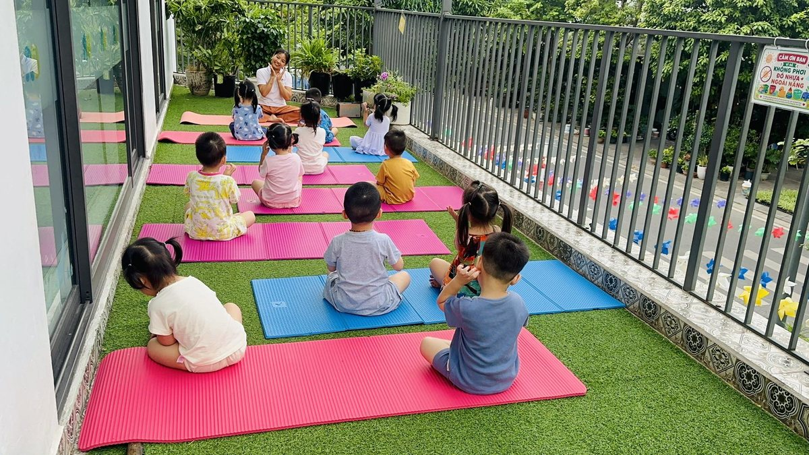
Cuối mỗi buổi Yoga, lớp cô có 15 phút massage. Và đó là lúc cả lớp nhốn nháo nhất. Cô vừa trải thảm ra, bạn nào cũng muốn chạy lên trước: “Cô ơi đến lượt con!”, “Con nữa, con nữa cô ơi!”
Từng bạn nằm xuống. Cô ngồi phía đầu, đặt tay thật nhẹ lên trán con, xoa tròn hai bên thái dương, vuốt đôi lông mày, ủ ấm đôi mắt. Cô hỏi nhỏ: “Con có thích không?” Con gật. Mỉm cười. Có bạn cười khúc khích không dừng được.
Lớp đang ồn ào. Rồi lặng dần.
Vì sao cô đưa massage vào lớp Yoga?
Sau nhiều năm dạy, cô thấy trẻ con bây giờ chạm vào màn hình nhiều hơn được chạm vào bằng sự bình yên. Ngày của các con cũng vội. Vội dậy, vội ăn, vội đi học. Cô muốn trong buổi Yoga có một khoảng mà không ai phải vội cả.
Yoga với trẻ nhỏ không chỉ là tư thế. Sau phần vận động, cơ thể bé còn “chạy” rất lâu. Bảo con nằm im thì khó. Nhưng khi có một bàn tay ấm đặt lên trán, con tự nằm im. Không cần ai nhắc.
Với cô, massage không chỉ là đôi tay. Mỗi lần chạm vào các con, cô thở chậm lại và gửi vào đó tất cả sự yêu thương, sự bình an và một nguồn năng lượng khỏe mạnh. Trẻ con cảm nhận được điều ấy rất rõ. Người lớn vội vàng hay thong thả, đang bực hay đang thương, con đều biết qua bàn tay.
Và cô muốn các con học một điều mà cô nghĩ là rất quan trọng: cơ thể mình là của mình. Ai chạm vào cũng phải hỏi trước. Mình được quyền nói “nhẹ thôi” hay “con không muốn”.
15 phút ấy giúp các con điều gì?
Cô không dám nói massage chữa được điều gì. Cô chỉ kể những gì cô thấy ở lớp mình.
- Thấy an toàn và được thương. Cái chạm dịu dàng nói với con điều mà lời nói đôi khi không nói hết: con đang được yêu thương. Bé nhút nhát nhất lớp cũng dần mở lòng với cô.
- Cơ thể chậm lại. Hơi thở dịu xuống, vai thả ra, bàn tay nhỏ thôi nắm chặt. Nhiều bé ngủ thiếp đi luôn.
- Biết lắng nghe chính mình. Cô hỏi “nhẹ thế này được chưa con?”, con tập trả lời “được ạ” hay “nhẹ hơn cô ơi”. Con bắt đầu để ý cơ thể mình đang thấy thế nào.
- Học xin phép và được xin phép. Lần nào cô cũng hỏi trước. Dần dần, các con cũng hỏi bạn trước khi chạm vào bạn.
- Kiên nhẫn chờ đến lượt. Bạn hiếu động nhất lớp cũng chịu nằm im. Vì biết cô sẽ đến.
- Gần cô hơn. Có bé mới đi học, cả buổi còn rụt rè. Đến lúc massage, con mở mắt nhìn cô cười. Sợi dây giữa cô và con bắt đầu từ những phút như thế.
Bố mẹ đón con cũng hay kể với cô rằng tối hôm ấy bé ngủ ngon. Cô không biết chắc đó là nhờ massage, hay nhờ cả buổi được vận động, được cười. Có lẽ là cả hai.
15 phút massage diễn ra thế nào?
- Nằm xuống (2 phút): cả lớp nằm ngửa, tay chân dang nhẹ như ngôi sao. Cô bật một bản nhạc thật nhẹ.
- Thở cùng nhau (2 phút): cô đếm chậm, các con hít vào bụng phồng, thở ra bụng xẹp.
- Cô đến từng bạn (10 phút): mỗi bạn được cô massage đầu và mặt khoảng một, hai phút, với vài động tác bên dưới. Bạn nào cũng xin “đến lượt con”. Các bạn còn lại nằm yên, nghe nhạc, chờ cô đến.
- Thức dậy (1 phút): cô gọi khẽ, các con cựa ngón tay, ngón chân, nghiêng sang một bên rồi từ từ ngồi dậy, chắp tay cảm ơn.
9 động tác cô hay dùng
Ảnh thật từ lớp Yoga trẻ em của cô Sophia. Khuôn mặt các bé được che để bảo vệ các con.
-
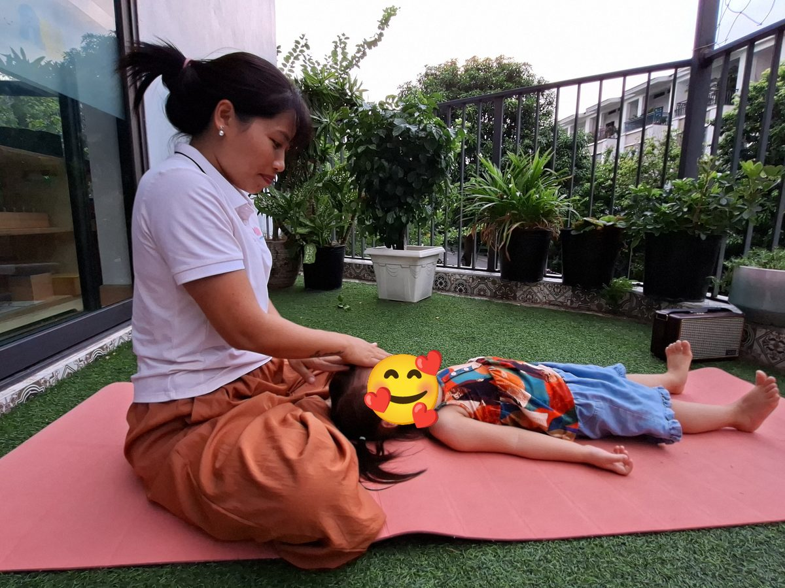
1Bàn tay ấm trên trán
🌿 Chào bé, xin phép
Cô nói với bé: “Cô xoa đầu cho con nhé?”
Cách làm: Bé nằm ngửa, cô ngồi phía đầu bé. Con gật đầu thì cô mới đặt nhẹ một lòng bàn tay lên trán con. Cô không xoa vội. Cô để tay nằm yên như thế qua ba hơi thở của bé.
Điều cô để ý: Ba hơi thở đầu tiên là để bé quen với bàn tay cô. Có bé lúc này còn mở mắt nhìn. Có bé nhắm mắt luôn.
-
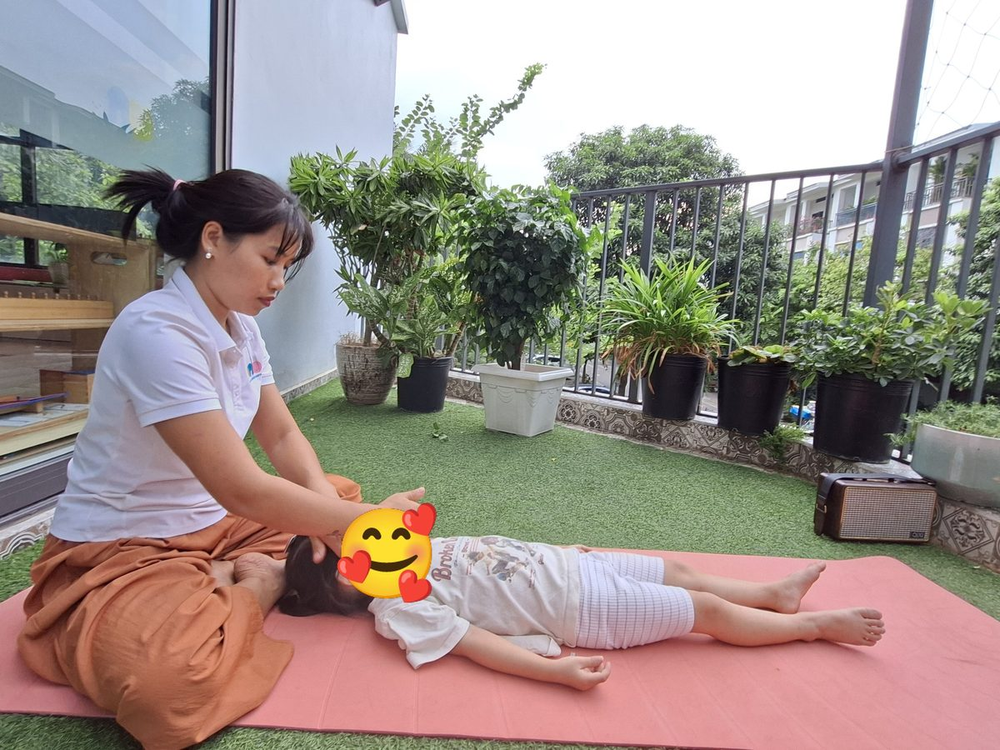
2Vuốt trán ra hai bên
🌿 Mây trôi
Cô nói với bé: “Mây trôi sang trái… mây trôi sang phải…”
Cách làm: Đầu các ngón tay đặt giữa trán, vuốt chậm ra hai bên thái dương rồi nhấc tay lên, làm lại từ giữa. Năm, sáu lượt, mỗi lượt chậm hơn lượt trước.
Điều cô để ý: Cô vuốt theo nhịp thở ra của con. Lớp lúc đó gần như chỉ còn tiếng thở.
-
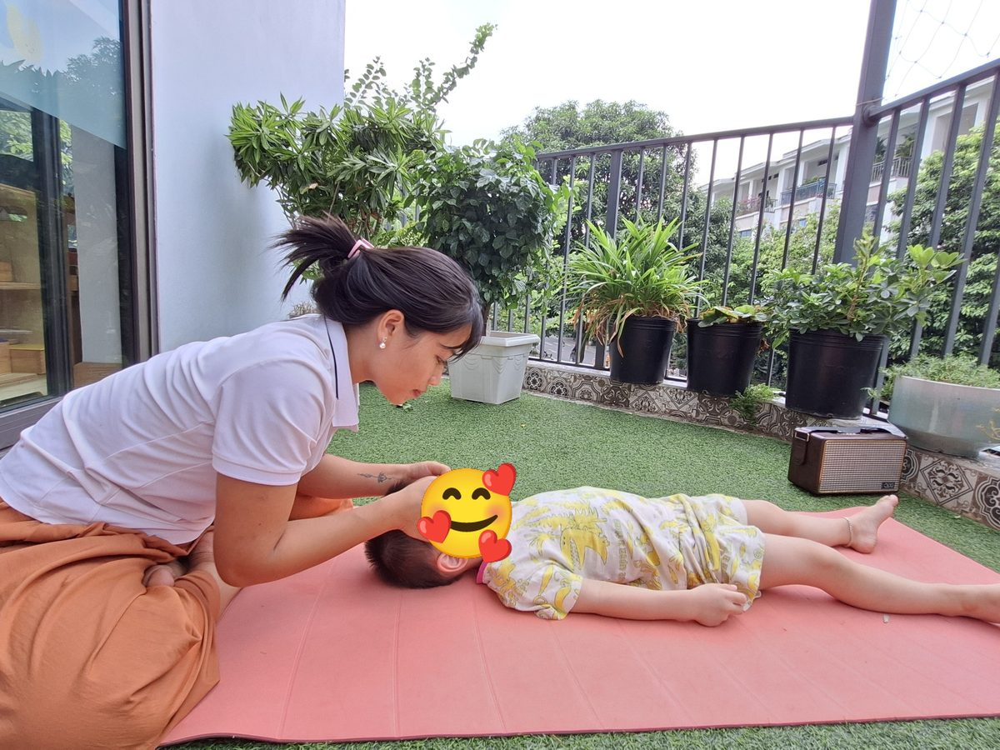
3Vuốt lông mày
🌿 Cầu vồng nhỏ
Cô nói với bé: “Cô vẽ hai chiếc cầu vồng nhỏ trên mắt con nhé.”
Cách làm: Hai ngón cái vuốt nhẹ theo hàng lông mày, từ trong ra ngoài, như vẽ một vòng cung. Lực thật nhẹ, chỉ như lướt qua.
Điều cô để ý: Bé nào hay cau mày khi tập trung thì đến đây trán giãn ra thấy rõ. Cô thích nhìn khoảnh khắc ấy lắm.
-
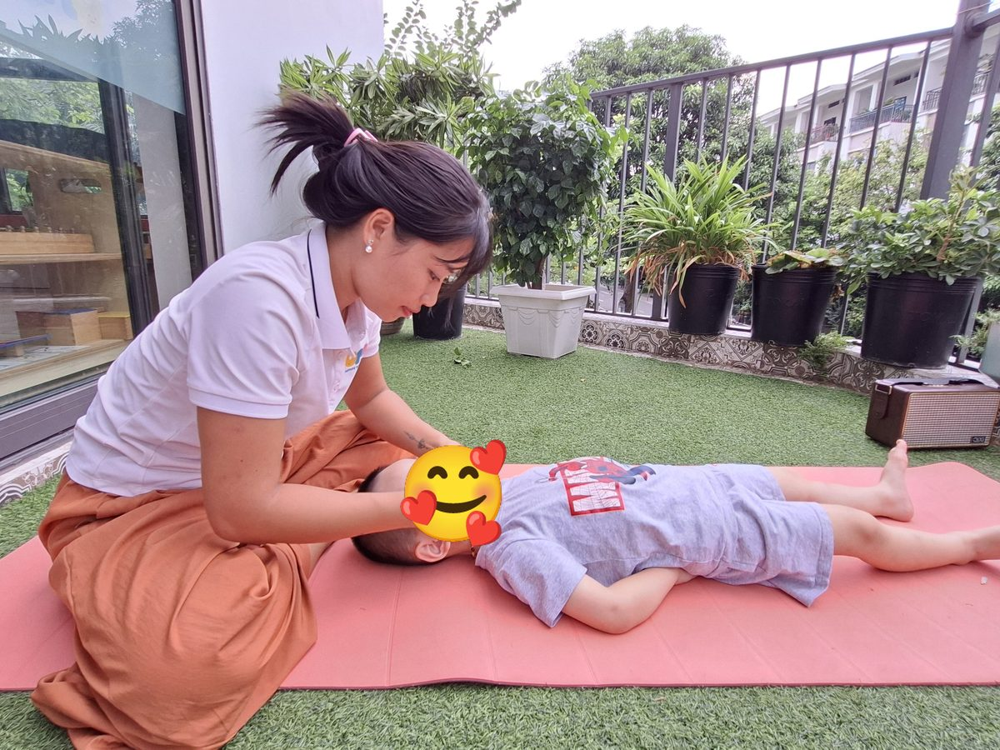
4Xoa tròn thái dương
🌿 Bánh xe quay chậm
Cô nói với bé: “Bánh xe quay… quay thật chậm…”
Cách làm: Đầu ngón tay giữa và ngón áp út đặt ở hai bên thái dương, xoa những vòng tròn nhỏ. Cô đếm thầm đến năm rồi đổi chiều.
Điều cô để ý: Đây là động tác nhiều bé thích nhất. Có bé còn bảo cô “nữa đi cô”.
-
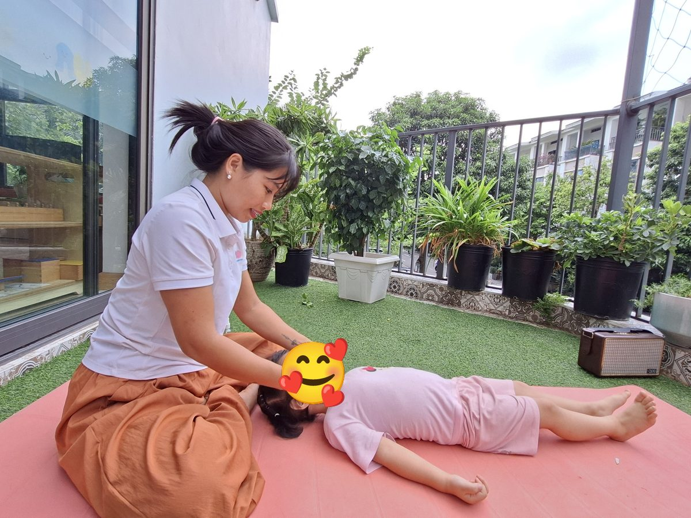
5Ôm đôi má
🌿 Bông hoa nở
Cô nói với bé: “Hai bàn tay cô là hai chiếc lá, ôm lấy bông hoa.”
Cách làm: Hai lòng bàn tay áp nhẹ hai bên má bé, giữ yên vài hơi thở rồi vuốt chậm xuống cằm.
Điều cô để ý: Cô không bóp, không ấn. Chỉ áp tay vào cho con thấy ấm. Với bé nhỏ, như vậy là đủ.
-
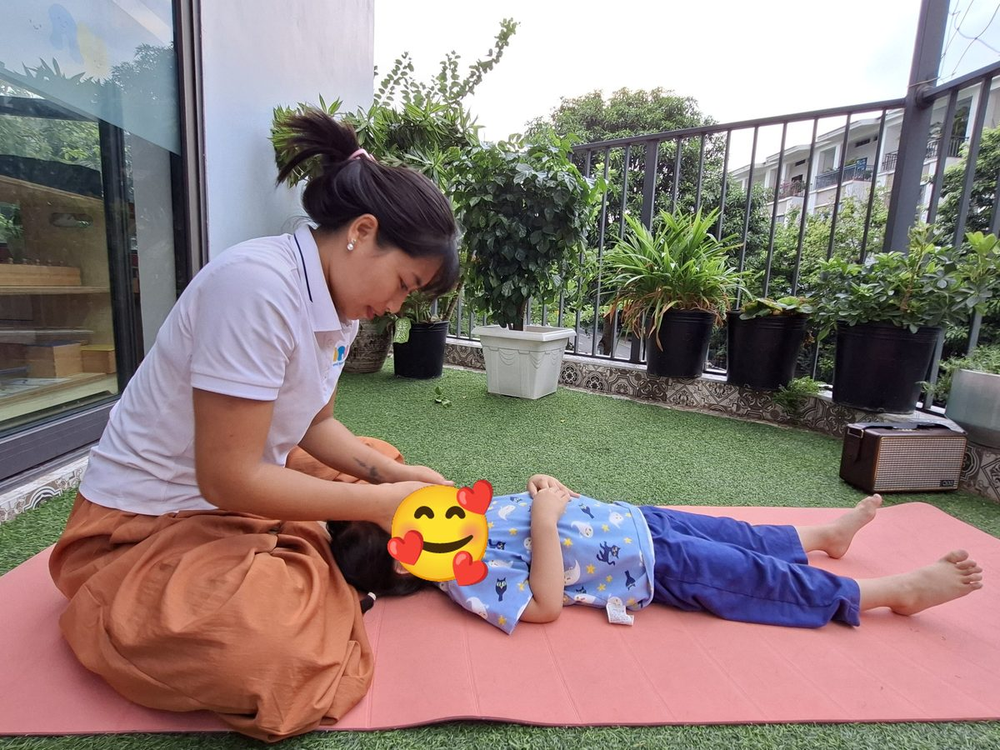
6Ủ ấm đôi mắt
🌿 Đêm xuống
Cô nói với bé: “Trời tối rồi. Đôi mắt đi ngủ thôi.”
Cách làm: Cô xoa hai lòng bàn tay vào nhau cho ấm, rồi khum tay úp nhẹ lên đôi mắt bé, không chạm vào nhãn cầu. Giữ ba đến năm hơi thở.
Điều cô để ý: Có bé đặt hai tay lên ngực, có bé ôm lấy tay cô. Cô cứ để con làm điều con muốn.
-
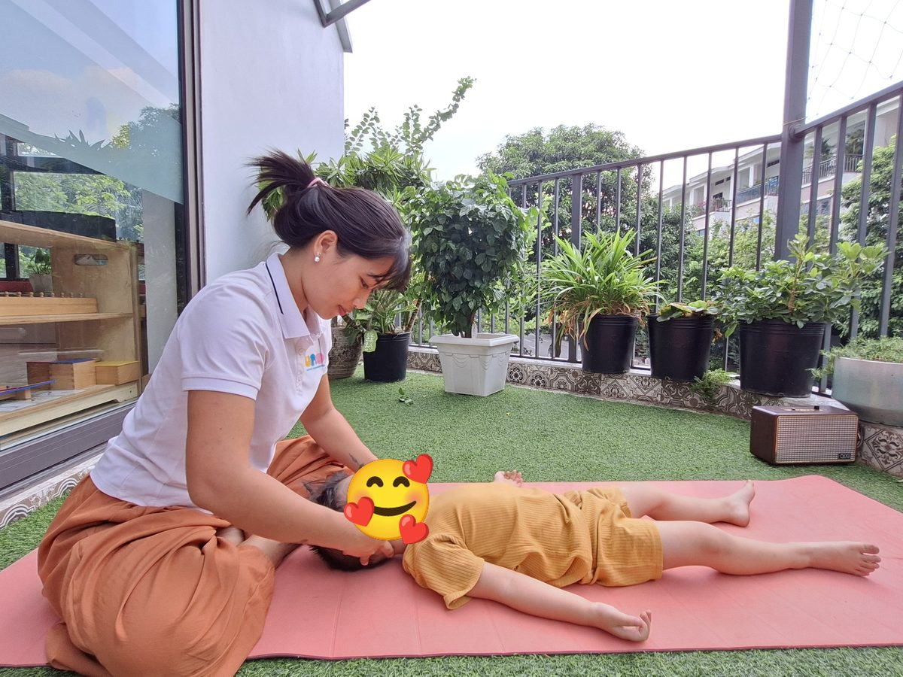
7Nâng đỡ cái đầu nhỏ
🌿 Gối mây
Cô nói với bé: “Đầu con nằm trên đám mây mềm.”
Cách làm: Hai bàn tay luồn nhẹ xuống sau gáy, đỡ lấy phần đầu của bé. Cô giữ yên để con thả hết sức nặng của đầu vào tay cô, không kéo, không xoay cổ.
Điều cô để ý: Lúc đầu nhiều bé còn “gồng” cổ lên. Vài hơi thở sau, cô thấy đầu con nặng dần trong tay mình. Đó là lúc con thật sự buông lỏng.
-
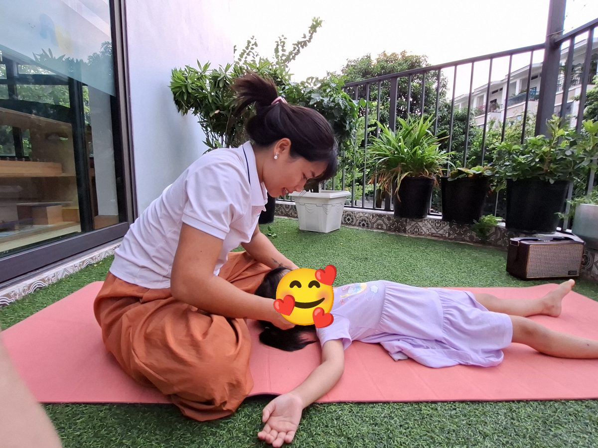
8Day nhẹ dái tai
🌿 Chuông gió
Cô nói với bé: “Cô rung chiếc chuông gió nhỏ nhé.”
Cách làm: Ngón cái và ngón trỏ cầm nhẹ dái tai, day tròn vài lần rồi kéo thật khẽ xuống dưới. Làm cả hai bên.
Điều cô để ý: Động tác này hay làm các con khúc khích. Cười cũng được. Cười xong con lại nằm yên.
-
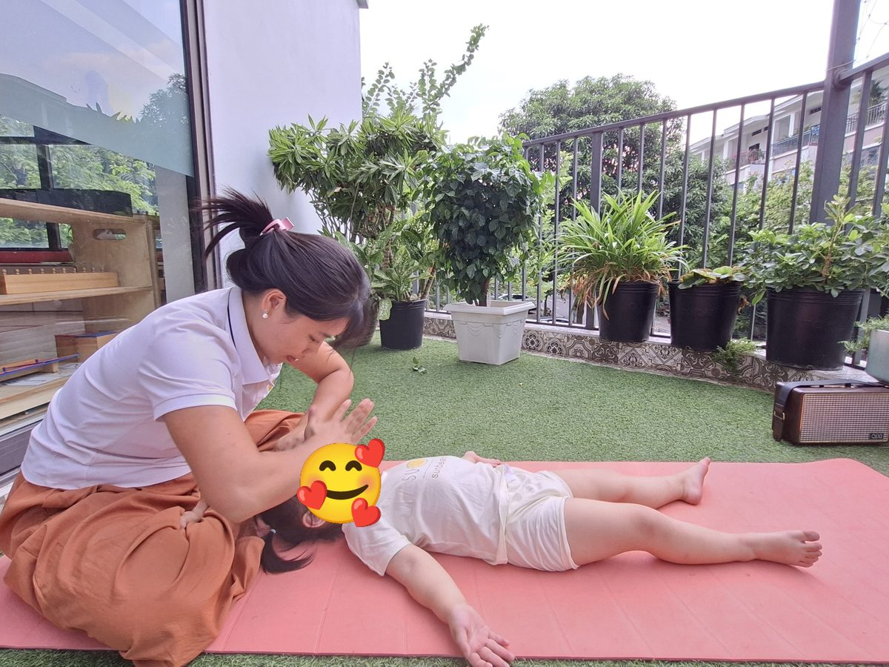
9Mưa rơi lách tách
🌿 Kết thúc
Cô nói với bé: “Mưa rơi… mưa nhỏ dần… mưa tạnh rồi.”
Cách làm: Đầu các ngón tay gõ thật nhẹ lên trán và đỉnh đầu, như mưa rơi. Mưa nhỏ dần rồi dừng. Cô đặt lại bàn tay lên trán con một lần cuối, rồi nhẹ nhàng nhấc ra.
Điều cô để ý: Cô luôn kết thúc bằng một bàn tay nằm yên, giống như lúc bắt đầu. Để con biết buổi massage đã xong, mà không bị giật mình.
Điều cô học được từ những phút ấy
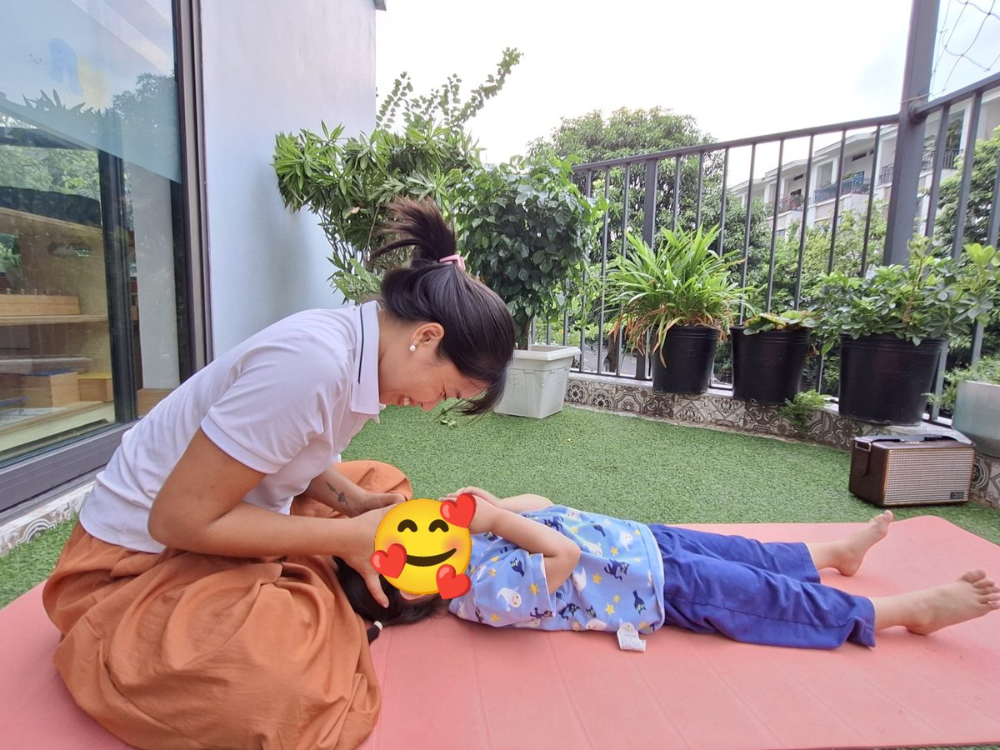
Có những buổi cô đến lớp mà lòng vẫn còn bộn bề. Rồi cô ngồi xuống, đặt tay lên trán một bạn nhỏ, và thấy hơi thở của con chậm dần dưới tay mình.
Chậm lại. Rồi chậm thêm chút nữa.
Lúc ấy cô không dạy gì cả. Cô chỉ ở đó với con. Trọn vẹn. Và cô nhận ra mình cũng đang thở chậm theo con.
Cô nghĩ các con sẽ quên tên nhiều tư thế. Nhưng cảm giác được nằm yên, được chạm vào thật dịu dàng, được hỏi “con có muốn không”, cô mong con sẽ nhớ lâu.
Vài điều cô hay để ý
- Luôn hỏi trước. Bé lắc đầu thì cô chỉ ngồi cạnh, đặt tay lên vai con hoặc thôi hẳn. Lần sau cô lại hỏi.
- Tay sạch, móng cắt ngắn, tay ấm. Mùa lạnh cô xoa tay thật lâu trước khi chạm vào con.
- Lực rất nhẹ. Nhẹ như chạm vào cánh hoa. Cô không ấn mạnh, không bẻ, không xoay cổ bé.
- Cô không dùng dầu hay kem ở vùng mặt, nhất là gần mắt.
- Bé ốm, sốt, có vết thương hay mẩn ngứa ở đầu, mặt thì cô để con nằm nghỉ, không massage.
- Bé cười, cựa quậy cũng không sao. Cô không bắt con phải nằm im. Một lúc sau con tự yên.
🌟 Điều các con mang về sau buổi tập
Ahimsa là yêu thương, không làm đau ai. Các con được chạm vào thật dịu dàng, và học cách dịu dàng với người khác.
Santosha là bằng lòng với hiện tại. Nằm yên. Thở. Không cần làm gì thêm. Thế là đủ.
Không phải tư thế khó. Mà là lúc một bạn nhỏ nằm yên dưới bàn tay cô, thở thật đều, và thấy mình được thương.